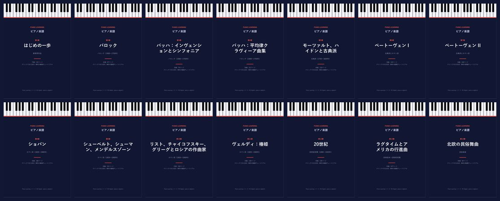
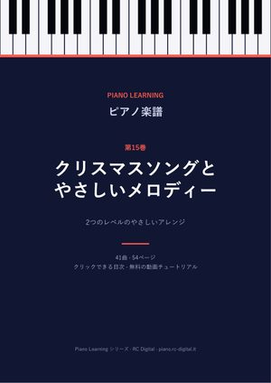
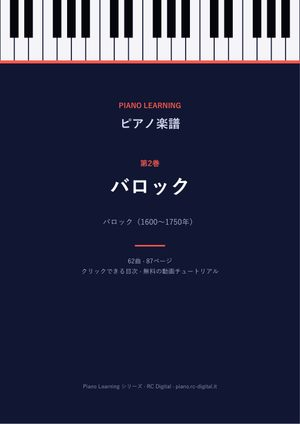
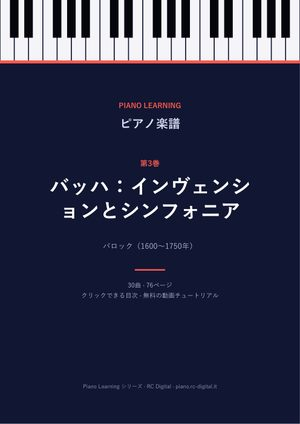
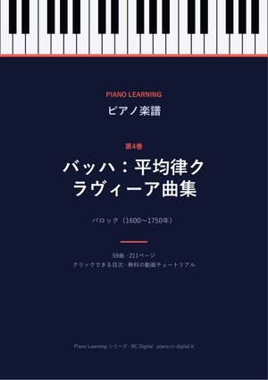
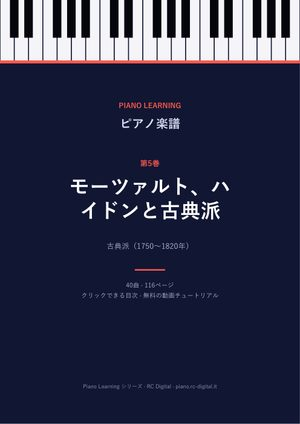
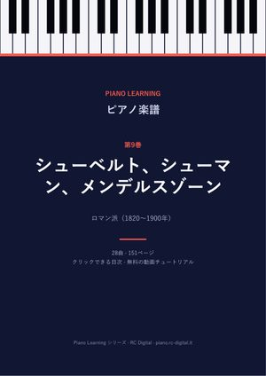
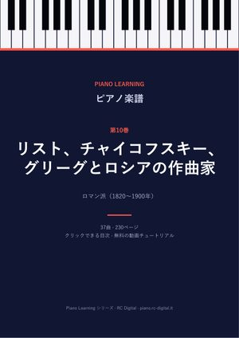

ピアノ楽譜 PDF
作曲家と時代ごとにまとめた全14巻。クリックできる目次、作曲家の紹介、動画チュートリアルのある曲にはそのリンク付き。どの商品にも10言語の PDF が含まれます。


🎄 クリスマスの新刊第15巻
クリスマスソングとやさしいメロディー
41曲 · 54ページ
全41曲、2つのレベルのやさしいアレンジ：クリスマスソング16曲と有名なメロディー25曲。
€3.99購入する
各巻

バロック（1600～1750年）第2巻バロック
バッハ（メヌエット、ポロネーズ、小前奏曲、コラール）、ヘンデル、スカルラッティ、ラモー、パッヘルベル。
62曲 · 87ページ
€3.99購入する

バロック（1600～1750年）第3巻バッハ：インヴェンションとシンフォニア
2声のインヴェンション15曲と3声のシンフォニア15曲の全曲。
30曲 · 76ページ
€3.99購入する

バロック（1600～1750年）第4巻バッハ：平均律クラヴィーア曲集
『平均律クラヴィーア曲集』の前奏曲とフーガ、イギリス組曲とフランス組曲、組曲 BWV 1006a、『フーガの技法』。
59曲 · 211ページ
€3.99購入する

古典派（1750～1820年）第5巻モーツァルト、ハイドンと古典派
トルコ行進曲、ソナタ・ファチーレ、幻想曲ニ短調ほか18世紀の古典作品。
40曲 · 116ページ
€3.99購入する


ロマン派（1820～1900年）第9巻シューベルト、シューマン、メンデルスゾーン
シューベルトの即興曲8曲、子供の情景、無言歌、ブラームス。
28曲 · 151ページ
€3.99購入する

ロマン派（1820～1900年）第10巻リスト、チャイコフスキー、グリーグとロシアの作曲家
コンソレーション、四季、ペール・ギュント、展覧会の絵ほかロマン派の作品。
37曲 · 230ページ
€3.99購入する

Payhip による安全な決済で、購入後すぐにメールでダウンロードできます。楽譜は自由な版（パブリックドメインまたは Creative Commons）で、このサイトの各曲のページでも1曲ずつ無料で入手できます。ここではすべてを1つのファイルに整理し、各版のクレジットも掲載しています。